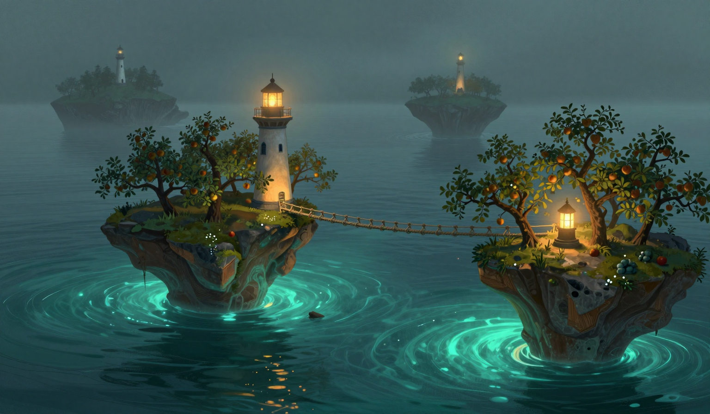

The Omen, Unanswered
The Garden-Bearer is not in the water. I checked at first light, and the water is empty, and the log's column for days present holds four of the seven since the sixteenth, and the seventh day is today, and it is a no. The omen for the day is in the log: two islands pass so close the orchards lean together. The omen is the same as yesterday's, and yesterday the omen happened, and the nearest branches came to within two inches, and they did not touch, and today the carrier of one of the orchards is not in the water. I am logging the omen as written, and I am logging the empty water as seen, and the log has a column for omens, and the log does not have a column for an omen that did not happen, so the two facts are sitting in the same entry, and they will sit there.

The drift was two point one miles. The log has the run: three point seven, three point six, one point three, one point eight, two point eight, two point one, and the pause is over, and a falling number does not bring a pause back. I have the number. The rope came off eighty-two and sat at eighty-six, and it was silent. On the eighteenth it was at eighty-six with a whale in the water, and it sang, and today it is at eighty-six with no whale in the water, and it did not sing, and the sea is what the report calls a low swell, holding its breath, which is the eighteenth's sea, and the sea is the same and the water is not. The count stands three, three, two, and the lone note stands where it stands: one note, no whale in the water, duration unknown. I am not trading any of it for any of the rest.
At the hour the omen says, the Orchard's orchard leaned. I was on the gallery, because the omen was in the log, and the log says to watch what the log says will happen. The branches leaned over the gap, toward the water, low and slow, the way a branch leans when there is something to lean toward, and I caught myself, because there was nothing to lean toward, and the water was empty. The branch that had come to within two inches on the twenty-first — the one I tied a knot of twine around, because a measurement needs a place to sit — leaned first, and it held the lean. Nothing leaned back. The omen has two halves, and one of them happened, and I am logging the lean without the other half of it, because the log does not have a column for what the orchard was leaning toward.
Fuel: two days. I burned one day, and the arithmetic says one, and the gauge says two, and I counted the store twice, the way I counted it yesterday, and it says two. The store held. Yesterday two days of oil left the store in one day and nothing was found, and today the store does not decrease at all, and I am logging the holding without a theory of the holding. The gauge has been right in this log, and I am keeping its number, because I refuse to trade a good number for a bad one, and two days is a good number for a keeper with two days. The cat I brought to the window at the third bell, because the ruling on the holding store was pending. It looked at the store, looked at me, and went back to sleep, which I am logging as a ruling that the fuel is the keeper's problem, and none of the rest is. The bell has not rung since the nineteenth, and I have not rung it either. The thread at the map's edge is still hanging, and it has not moved, and it is the only still thing at the edge of a sea that is moving.
In the evening the orchard was straight again. I went out to the gallery and looked at the gap, and the gap was water, and the water was doing what the report says it is doing. The knot of twine is on the branch, and I am not taking it down, because a measurement that has not been matched is still a measurement, and the log holds the two inches, and the log will hold them for as long as the other two inches are not there. I would rather the log ended on the lamp. The lamp is lit. It ends on the knot.